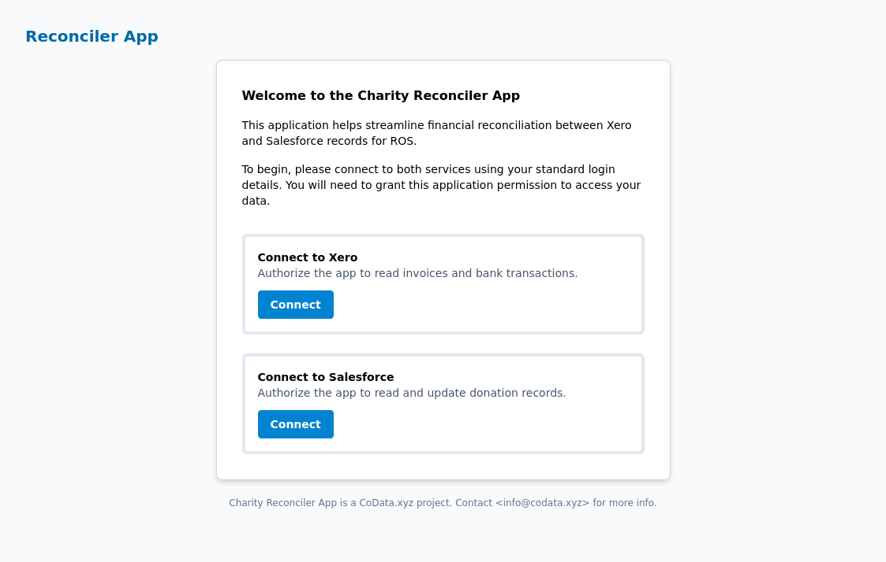
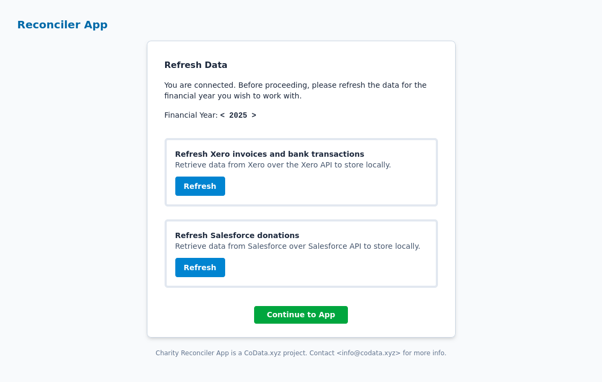
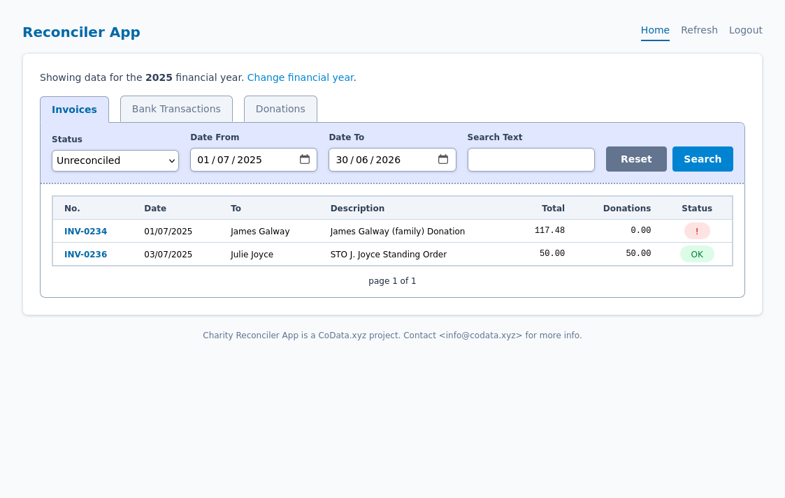
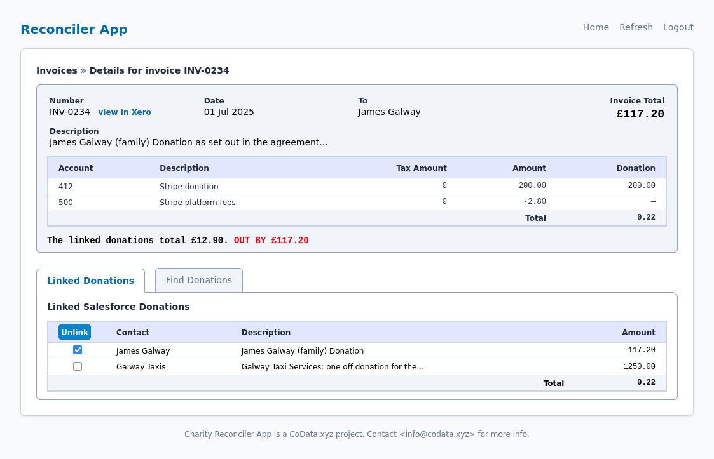

« Last
1/5: Welcome page and connection launch to Xero and Salesforce
Next »

« Previous
2/5: After connecting, data from each system must be refreshed.
Next »

« Previous
3/5: The main page provides access to invoices, bank transactions and donations.
By default only non-linked records are shown.
Next »

« Previous
4/5: The invoice detail page shows the linked Salesforce donation records.
Next »
« Previous
5/5: The find tab allows additional Salesforce donations records to be linked.
Start »